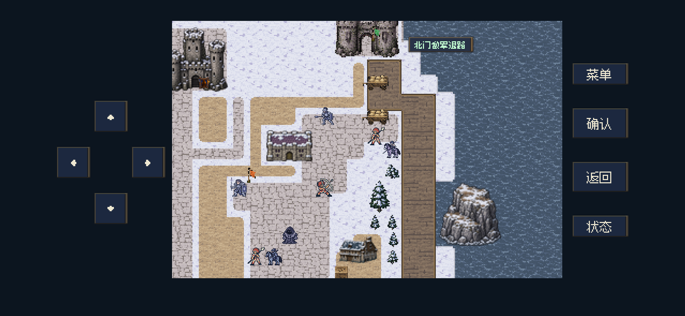
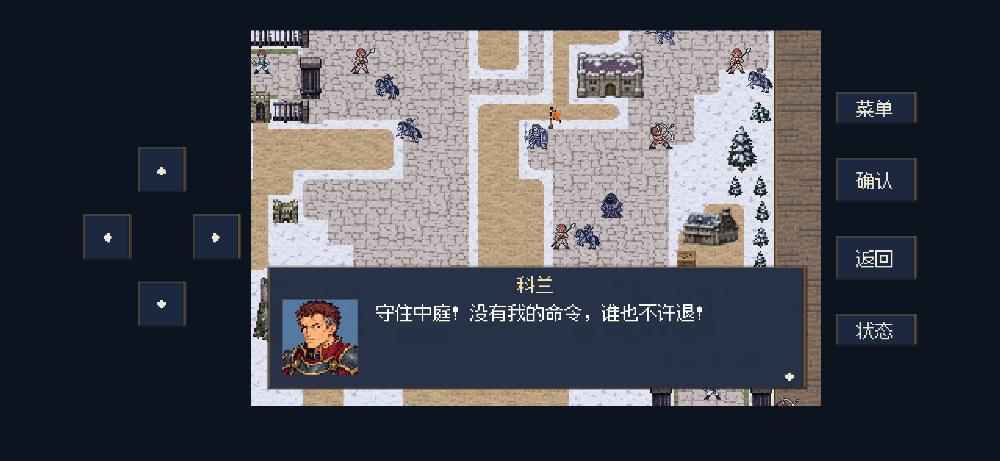
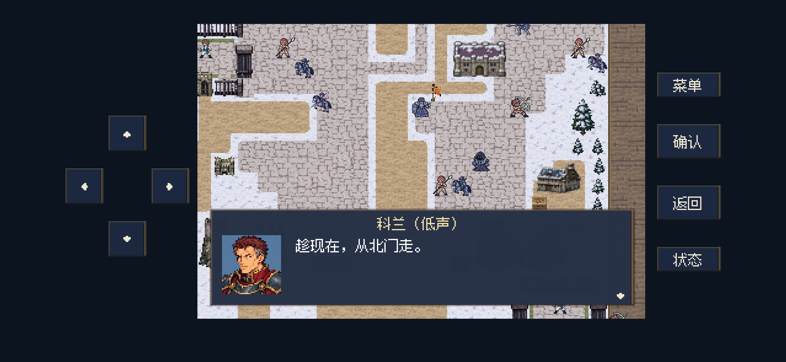
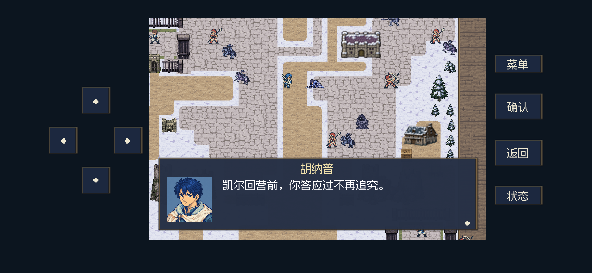
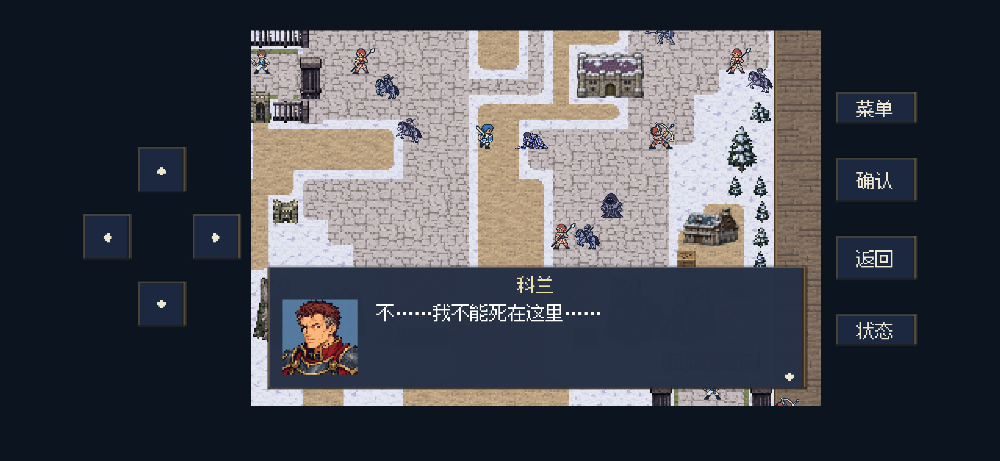
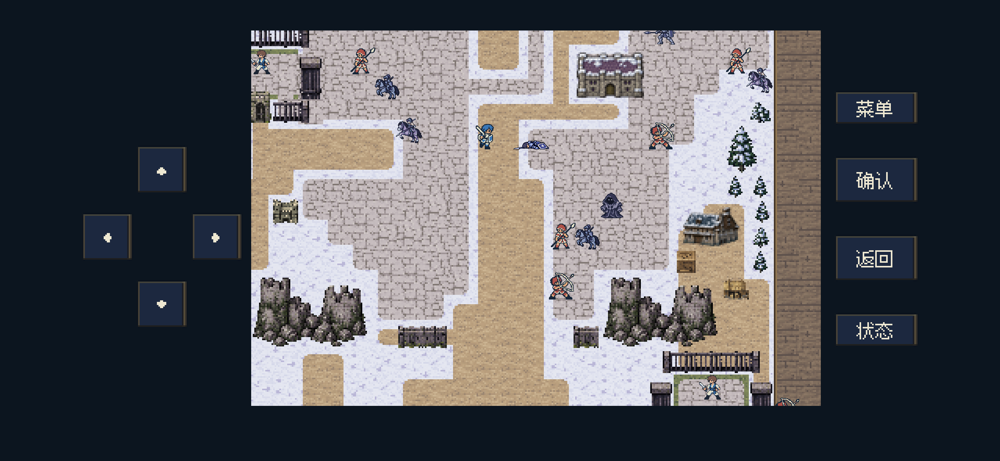
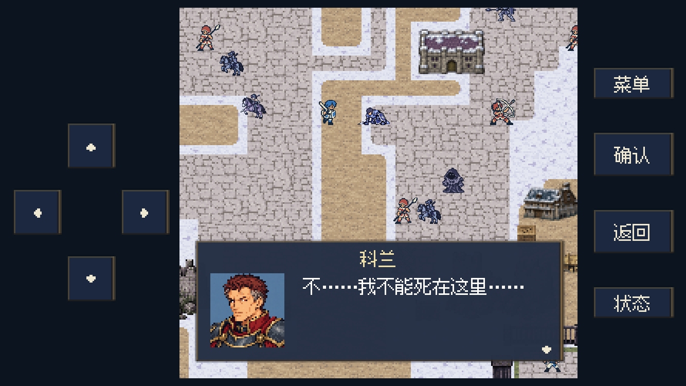
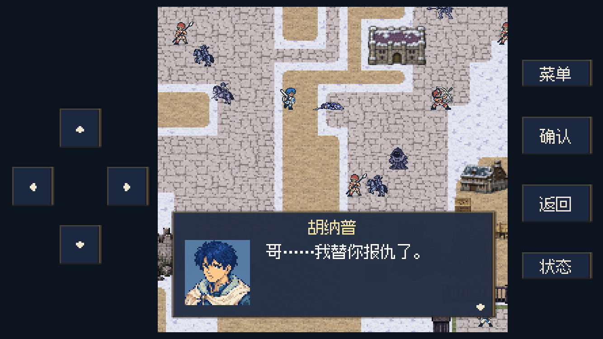
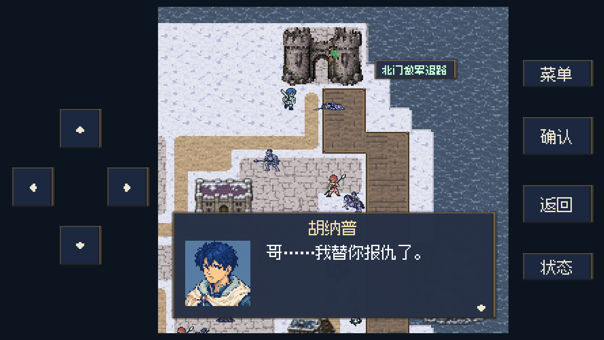
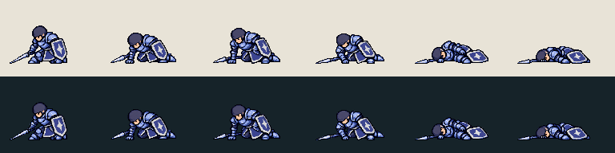

2026-11-01 · 当前 actual 工作区 · 已接入
M15 · 海峡城·旧塔堡
对白与剧情演出
按当前手工定稿接入开场、战中质问、低声撤离、临终及战后对白。科兰在本场因战伤身亡；胡纳普明确确认已替哥哥报仇。大地图地点仍为“海峡城”，战斗标题统一为“海峡城·旧塔堡”。
粮车先走 → 科兰喝令死守、假意迎战 → 趁交战转向北门 → 真实战斗造成致命伤 → 撑地回应与起身失败 → 倒地身亡、停顿 → 胡纳普确认报仇 → 救援条件达成后处理战后事务
实际引擎演出预览
Godot原生后台渲染，约16.7秒。独立战斗尾声场景，以自动确认展示对白与动作衔接；视频未录制声音。游戏中使用现有D13回忆音乐，人物对白仍由玩家逐页确认。
科兰：不……我不能死在这里……
【撑起失败，因战伤倒地身亡，画面停留。】
胡纳普：哥……我替你报仇了。
按真实战斗顺序播放
临终演出紧接致命一击。若此时劳工还没获救，演出结束先返回战斗继续救人；达到原有胜利条件后，再接赫兰公布军事记录、照护伤者与分粮。提前击败科兰会省略撤离，撤离后才首次接触则省略迎战挑衅。
演出只改变画面与对白，不再追加攻击。普通战斗仍只产生一次死亡与掉落；地形、单位数值、撤离回合、劳工生死及奖励配置保持原样。最后一句、倒地中途与死亡停顿均支持保存后接续，旧待播D13与旧开战重试更新为现行稿。
运行截图
开场：粮车北撤与公开死守

粮车沿北门道路离开；背景演出不增减战利品。

科兰面向进攻者发令，仍留在中庭。
转向北门：低声撤离

先转身、低声示意，再恢复原有AI向北门移动。
临终：撑地、失力、身亡与停顿

战斗致命一击后，科兰撑地回应质问。

试图起身，说出最后一句。
手臂失力，身体侧倒。

倒地后静止停留，明确身亡。
胡纳普停顿后确认已经报仇。
较窄横屏与北门截击

1334×750：最后一句与文字边框间距。

1334×750：死亡后回应。

北门附近被截住：胡纳普选可通行、无人占据的地面呈现，不改真实站位。
新增临终位图

跪倒、撑地、试图起身、失力、侧倒、静止身亡。保持现有壁垒卫士的蓝紫铠甲、十字盾与钢枪；原图留在工程外层source目录，游戏仅引用优化图集。
| 用途 | 尺寸 | 实际字节 |
|---|
| 科兰临终六姿势运行图集 | 768×96；每帧128×96，4倍密度 | 30,488 |
使用内置 image_gen 生成，裁图保持六姿势同一比例，并检查深浅背景及实际移动端显示尺寸。完整提示词、参考来源、角色动作映射与素材记录 · 全部图片规格与体积
验证范围
73项无窗口定向检查通过；同一套检查在后台图形模式共84项通过，含11张宽窄布局与北门场景检查。另有110项既有M15数值、回溯及跨章快照检查通过。确认普通战斗接触可触发临终，动画不追加伤害，奖励只结算一次，救援与撤离失败条件保留。
本轮为M15定向状态、普通战斗调用与演出检查，未重打全战役，也未进行真人难度评估或iPhone安装。M14战后与H05此前的新稿仍为文稿，本轮按用户要求接入M15。
无窗口检查 · 后台图形与布局检查 · 台本逐句对应 · 既有回溯检查 · 录像记录
对应文件
M15运行数据 · D13与撤离对白 · 剧情触发与旧记录衔接 · 演出控制器 · 台本